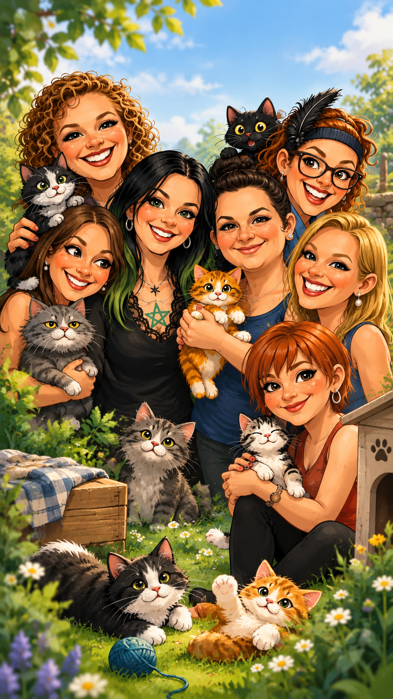
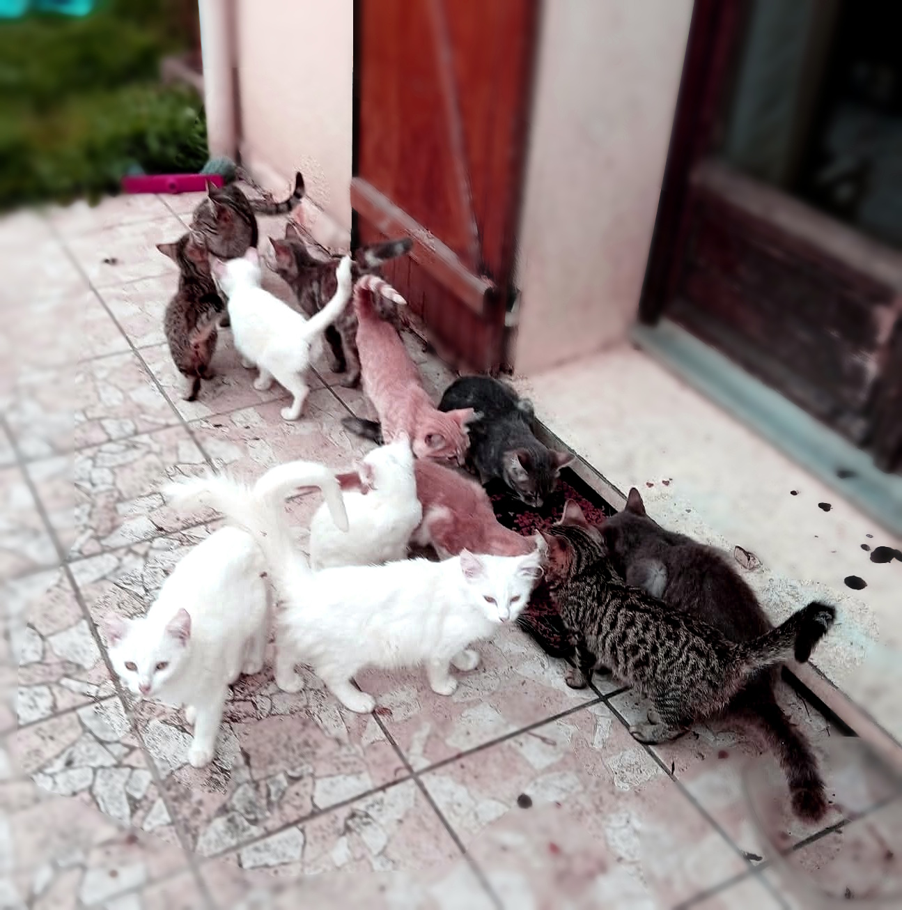
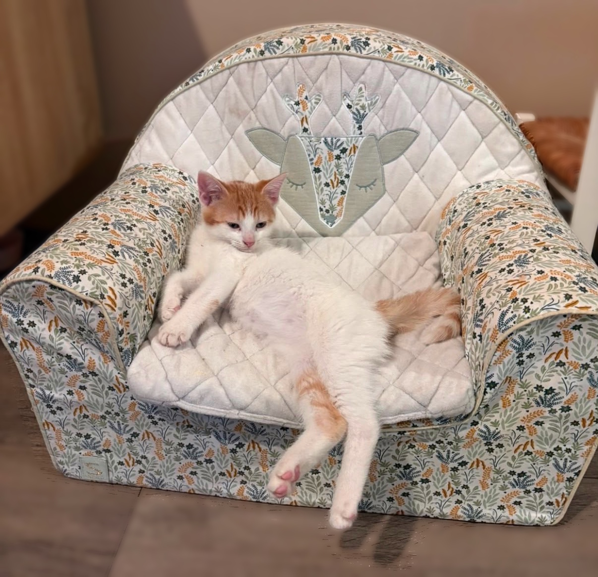
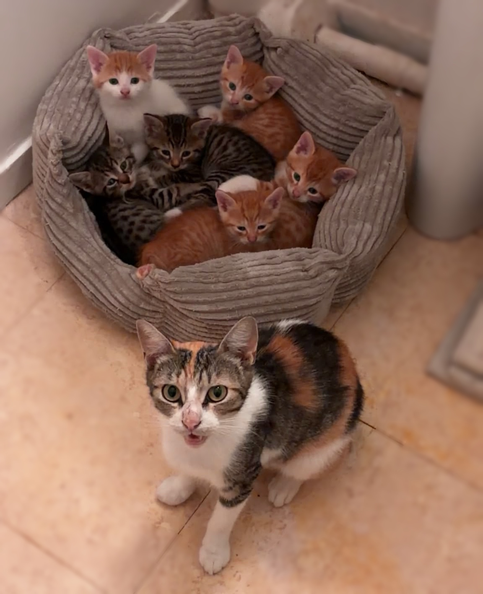
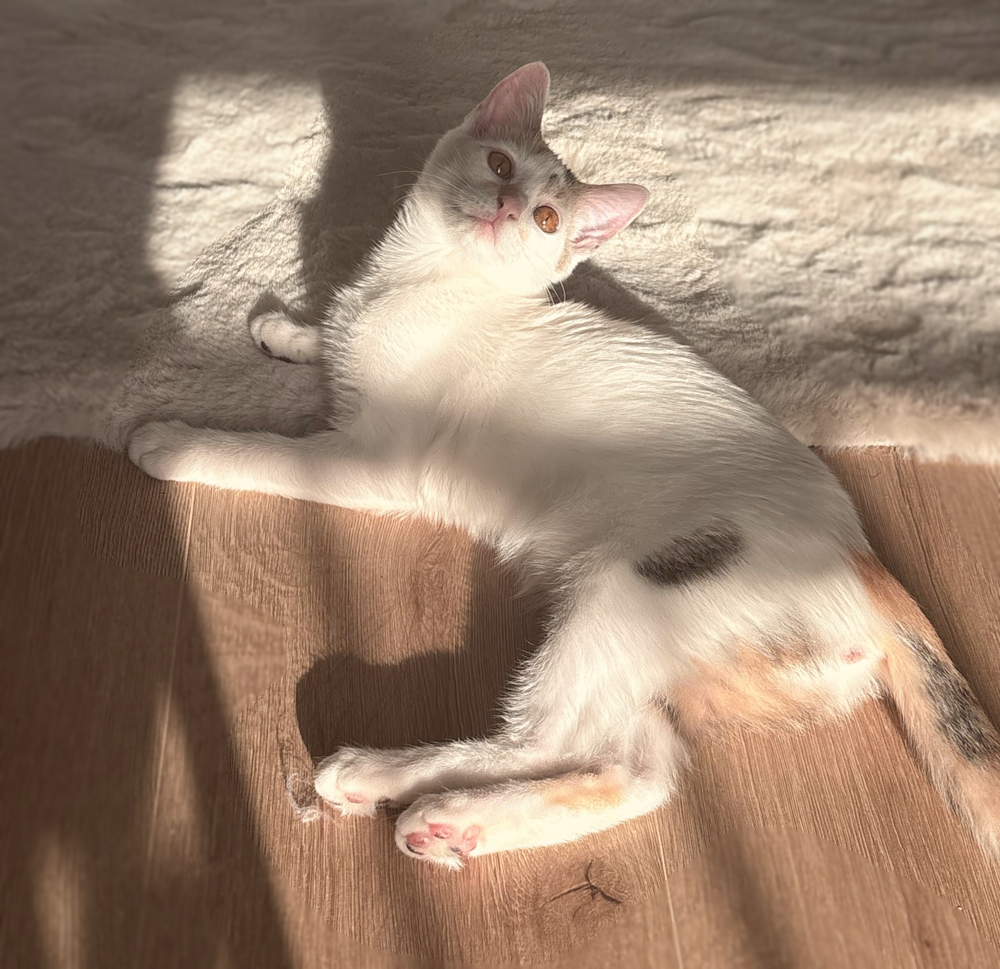
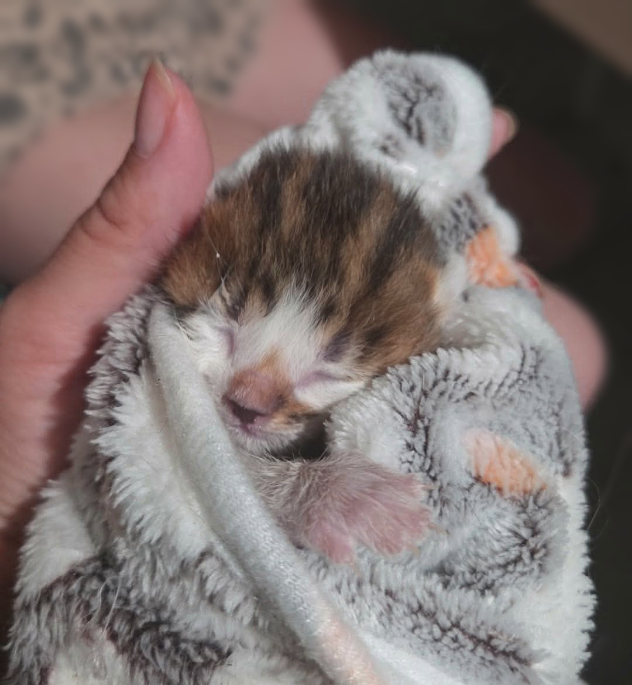
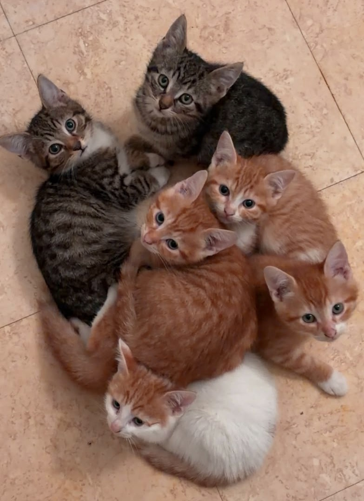

Eure · Beuzeville / Pont-Audemer
Chats Sans Familles
& L'Arche au-delà des moustaches
Sauver les chats errants, les soigner, les stériliser et les accompagner vers une famille.
Retrouvez sur Facebook les annonces d'adoption, nos événements et nos collectes.

Quelques mots
Au plus près
des chats errants.
Créée le 9 novembre 2015, Chats Sans Familles est une association à but non lucratif qui sauve les chats errants du secteur de Beuzeville et de Pont-Audemer, dans l'Eure.
Elle leur apporte les premiers soins vétérinaires, les fait stériliser, puis les place en famille d'accueil avant de les faire adopter.
Son souhait : qu'ils puissent vivre leur vie dans la joie et en bonne santé.
Identifiant RNA : W272002242
Prendre contact
Faire une rencontre
Un compagnon
vous attend peut-être.
Chaque chat accueilli par l'association mérite de trouver un foyer aimant où il pourra s'épanouir. Adopter, c'est offrir un nouveau départ à un chat qui en a besoin tout en accueillant un formidable compagnon dans votre vie.
Nos protégés sont présentés principalement sur notre page Facebook, où vous pourrez découvrir leur histoire, leur personnalité et leurs besoins.
Laissez-vous toucher par leur parcours : votre futur compagnon vous y attend peut-être.
Les grandes étapes de l’adoption d’un chaton
- Réservation : le contrat de réservation est signé avec l’association et un acompte est versé.
- Engagement : le certificat d’engagement et de connaissance est signé au moins 7 jours avant la cession.
- Départ : à partir de 12 semaines, après identification et soins prévus. Le contrat d’adoption est signé lors du départ du chaton. L’adoption est proposée avec ou sans option vaccination Typhus/Coryza. Le test FIV/FeLV constitue une option distincte. Contactez-nous pour plus de détails.
- Après l’adoption : le chaton est stérilisé par l’adoptant avant l’âge de 7 mois. Le justificatif vétérinaire est transmis à l’association dans les 15 jours suivant l’intervention. La caution prévue au contrat est restituée ou détruite à réception ; à défaut, elle peut être encaissée.
Chat adulte : son état de santé, sa vaccination et sa stérilisation sont précisés au cas par cas. Contactez-nous pour les démarches.

Découvrir les chats à adopterChaque geste compte
Envie de nous aider ?
Soutenir l'association financièrement ou en nature.

Soutenir un chat
Parrainage
Certains chats recueillis par l'association ne peuvent pas être proposés à l'adoption, en raison de leur âge, de leur état de santé ou de leur caractère. Ils ont pourtant besoin de soins et d'attention au quotidien.
Le parrainage permet de les soutenir à distance.
Pour contribuer à leurs soins, leur alimentation et leur bien-être.
Envie de choisir votre filleul et de devenir son parrain ou sa marraine ?
Contactez-nous

Ouvrir sa maison
Devenir famille d'accueil
Être famille d'accueil, c'est ouvrir temporairement les portes de son foyer à un chat en attendant qu'il trouve sa famille pour la vie.
En accueillant l'un de nos protégés, vous lui offrez un environnement rassurant, de l'attention et beaucoup d'amour. L'association prend en charge les frais vétérinaires et vous accompagne tout au long de l'accueil.
Vous souhaitez devenir famille d'accueil ? Contactez-nous
Dans la presse
Ils parlent de nous.
Articles et reportages consacrés à l'association.

Restons en lien